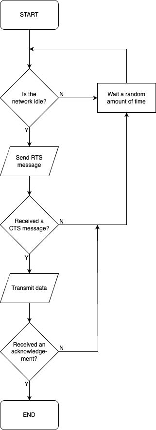

GCSE Link: None
 Carrier Sense Multiple Access with Collision Avoidance (CSMA/CA) is a protocol used in wireless networks in order to prevent data collisions.
Carrier Sense Multiple Access with Collision Avoidance (CSMA/CA) is a protocol used in wireless networks in order to prevent data collisions.
Before a device attempts to transmit information on the network, it first listens for signals to check if another device is currently transmitting. If the network is idle (no other devices transmitting), then it starts transmitting. It then waits for an acknowledgement signal from the router to verify that the data was received correctly. If the network wasn't idle, the device waits a random period of time before trying again.
This works if every device on the network is in range of every other device's transmissions, but
this is often not the case. For example, consider the setup shown in Diagram 1 below. If A wants to
transmit while B is already transmitting, A will not know that B is transmitting, because
it is out of range. This is called the "hidden node problem".
Diagram 1 shows a network with two devices, A and B. The dashed outlines show the range of each device's
transmissions.
 Diagram 1
Diagram 1
 Request to Send and Clear to Send (RTS/CTS) is a protocol that can be optionally used alongside CSMA/CA which helps solve the hidden node problem.
Request to Send and Clear to Send (RTS/CTS) is a protocol that can be optionally used alongside CSMA/CA which helps solve the hidden node problem.
Before a device attempts to transmit information, it sends a short Request to Send (RTS) message to the wireless access point. If no other devices are transmitting, the wireless access point returns a Clear to Send (CTS) message, telling the device to start the transmission. All other devices on the network go silent for some time after hearing the CTS message. When they hear the acknowledgement message, the other devices know that the transmission is over, and they can attempt to transmit their own message again.
 Draw a flowchart of the steps a device would take when attempting to transmit information using CSMA/CA with RTS/CTS.
Draw a flowchart of the steps a device would take when attempting to transmit information using CSMA/CA with RTS/CTS.
